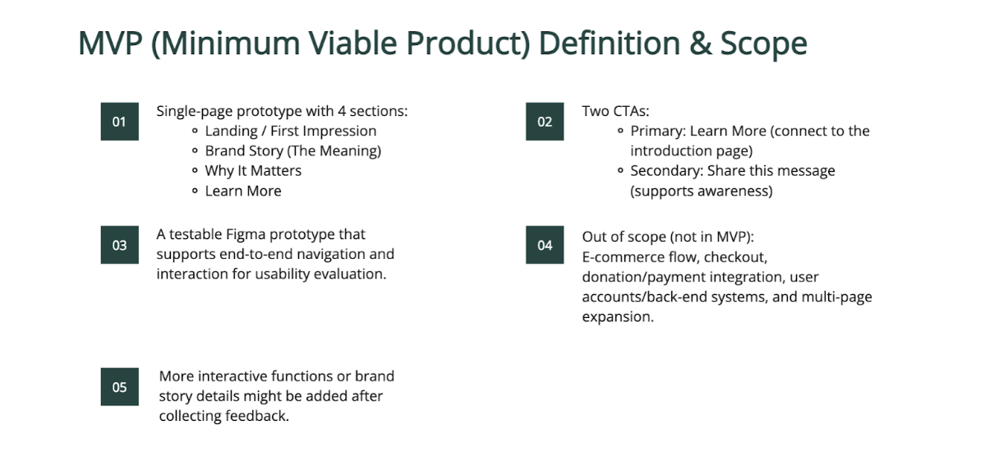
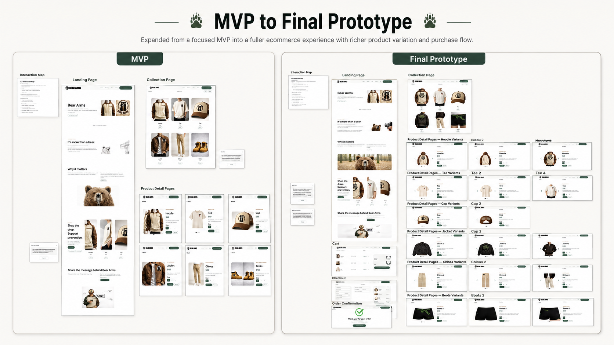

This section shows how the project expanded from an early concept-focused prototype into a fuller ecommerce experience. The first version centered on a smaller structure: a landing page, collection page, product detail pages, and message-sharing interactions. It helped communicate the brand idea, but the overall experience still felt limited as a complete shopping product.
As the project developed, I expanded the flow into a more complete ecommerce system. The later prototype added more product states, cart, checkout, and order confirmation, turning the project from a symbolic concept reveal into a connected shopping journey.
This shift was important because it made the project feel more believable as a digital product. Instead of only explaining the meaning of Bear Arms, the final structure gave users a clearer path from brand introduction to browsing, product selection, and purchase completion.

